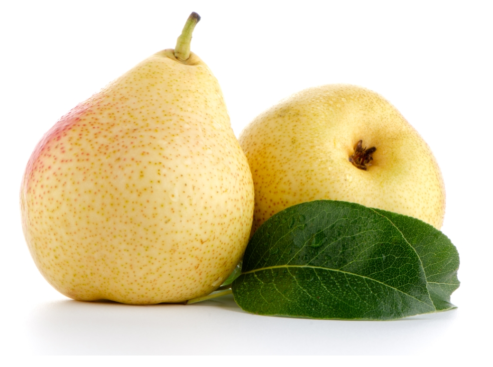

기관지와 폐를 보호하는 식품
- 해로운 세균을 없애주는 브로콜리
- 만성 염증을 줄여주는 고등어
- 해로운 활성산소를 줄여주는 토마토
- 가래를 삭이고 폐를 보호하는 기침의 명약 무
- 기관지와 폐 점막을 보호하며 기침을 멎게하는 오미자
- 천연 천식 치료제 수세미
- 기관지염, 폐렴을 다스리는 모과
- 기침과 가래를 잡아주는 늙은 호박
모과

'본초강목'에 따르면 모과는 주독을 풀고 가래를 제거하며 속이 울렁거릴 때 먹으면 속이 편안해지고 구워 먹으면 설사병에 잘 듣는다고 한다. 특히 모과는 목 질환에 효과적이어서 한방에서는 감기, 기관지염, 폐렴 등으로 기침을 심하게 하는 환자에게 모과를 약으로 사용하고 있다.